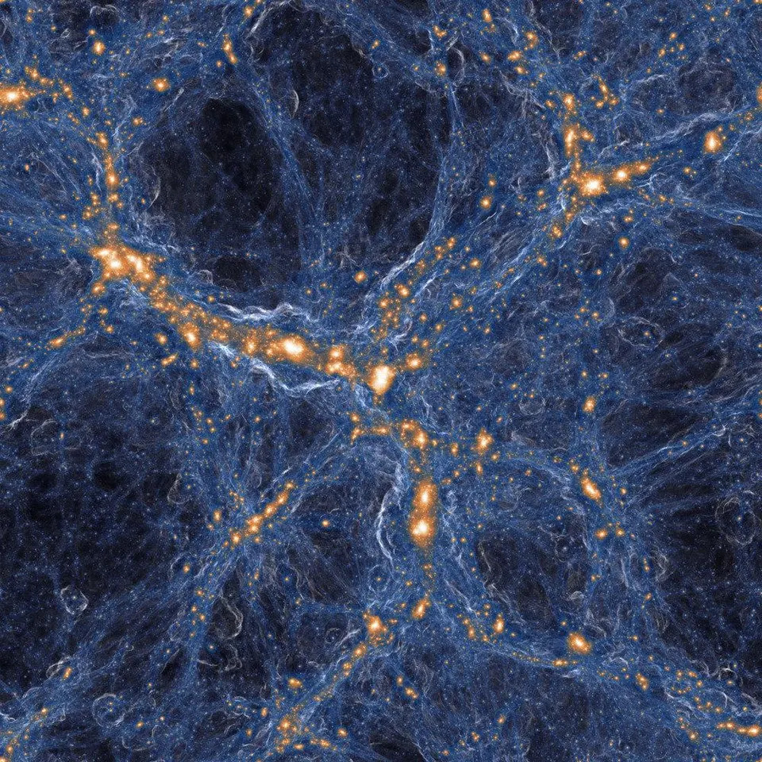
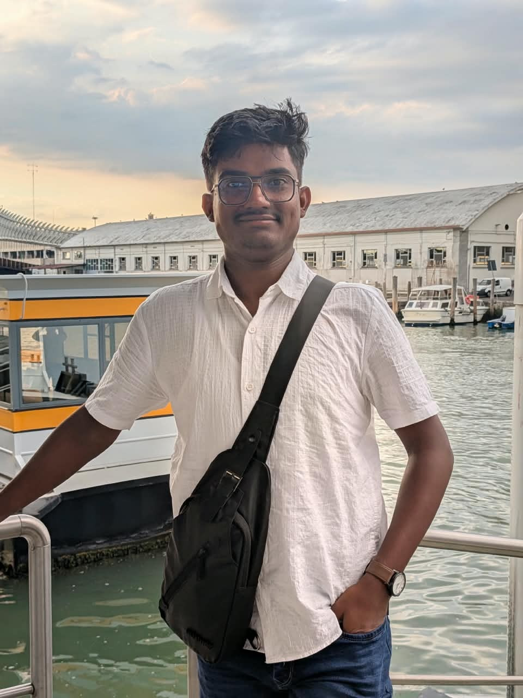
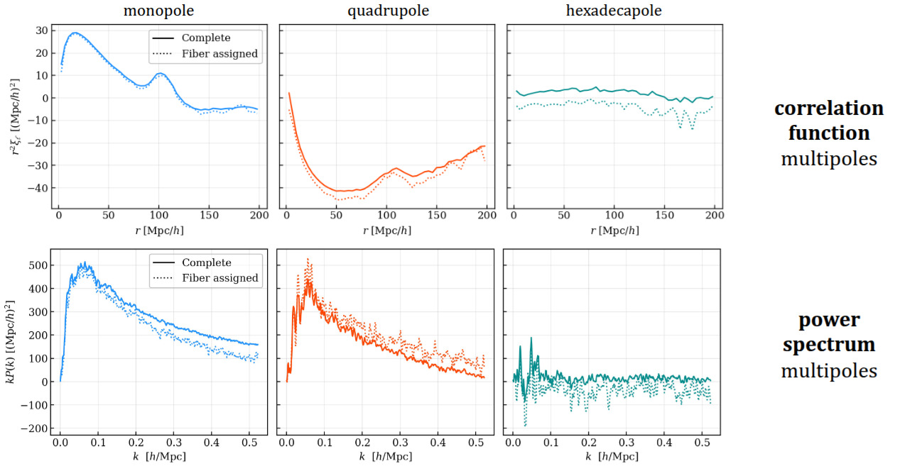
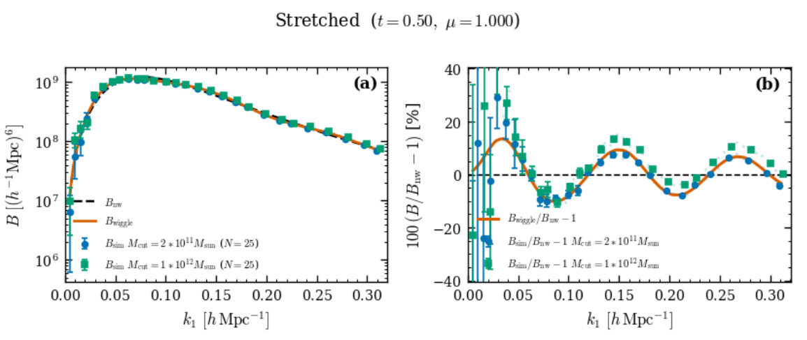

Large-scale structure
How galaxies trace the cosmic web, and what the clustering pattern says about dark energy, gravity and the early Universe.
PhD student in observational cosmology at IIT Kharagpur, measuring how galaxies cluster in DESI and how survey systematics bend that signal.
Dots are galaxies. Pairs closer than the fiber-collision limit are linked, because the telescope could not observe both.
About me Contact me
I am a Ph.D. student in the Department of Physics at IIT Kharagpur, supervised by Prof. Somnath Bharadwaj. My thesis topic is the redshift-space bispectrum as a probe of large-scale structure.
I use galaxy clustering to constrain structure formation and cosmic expansion, focusing on redshift-space power spectrum and bispectrum multipoles. I study how observational systematics, especially fiber collisions, affect clustering measurements in the Dark Energy Spectroscopic Instrument (DESI), using AbacusSummit N-body simulations and Fisher forecasts to test estimators and models. I collaborate with Dr. Shadab Alam (TIFR Mumbai).
I am also widening my background in inflation, the CMB, gravitational waves and particle cosmology, and I am a member of two SKAO science working groups.
Languages: Python, C++, C, Fortran, Julia, Bash, IDL. Cosmology and data tools: NumPy, SciPy, Astropy, Healpy, emcee, CosmoMC, CLASS, CAMB, Nbodykit, MontePython. Machine learning: TensorFlow, PyTorch, JAX, scikit-learn. Other: FITS, HDF5, Jupyter, LaTeX, Git, Linux, SLURM.
Download CV (PDF)Where each spectroscopic survey sits in redshift. Hover or tap a bar for details. Numbers are approximate; check the survey papers before citing.
Approximate footprints in equatorial coordinates (Mollweide, equal area). Toggle surveys, and move the cursor over the map to read RA, Dec and which surveys cover that spot. The areas shown come from simple cuts in declination and Galactic latitude, so they only roughly match the real survey masks.
Short summaries of papers I am reading or working on. Click a note to expand it.
Full list on NASA ADS and Google Scholar.

How galaxies trace the cosmic web, and what the clustering pattern says about dark energy, gravity and the early Universe.

Fibers in DESI cannot be placed arbitrarily close together, so close pairs go unobserved. I quantify how this biases clustering measurements and how to correct for it.

The bispectrum and beyond carry information the power spectrum misses. I work on estimating redshift-space bispectrum multipoles from AbacusSummit simulations and on Fisher forecasts for survey data.
TIFR Mumbai
DESI clustering and systematics
IIT Kharagpur
Ph.D. supervisor, large-scale structure
TIFR Mumbai
Postdoc TIFR Mumbai
IIT Kharagpur
M.Sc. supervisor, gravitation
I have been a teaching assistant for the Astronomy and Astrophysics course and for first- and second-year B.Tech. physics labs at IIT Kharagpur, and I mentor an M.Sc. student on higher-order perturbation theory. I volunteered at the Conference on Contemporary Physics for the Institute's Platinum Jubilee.
Department of Physics
Centre for Theoritical Studies (CTS)
Indian Institute of Technology Kharagpur
West Bengal, India